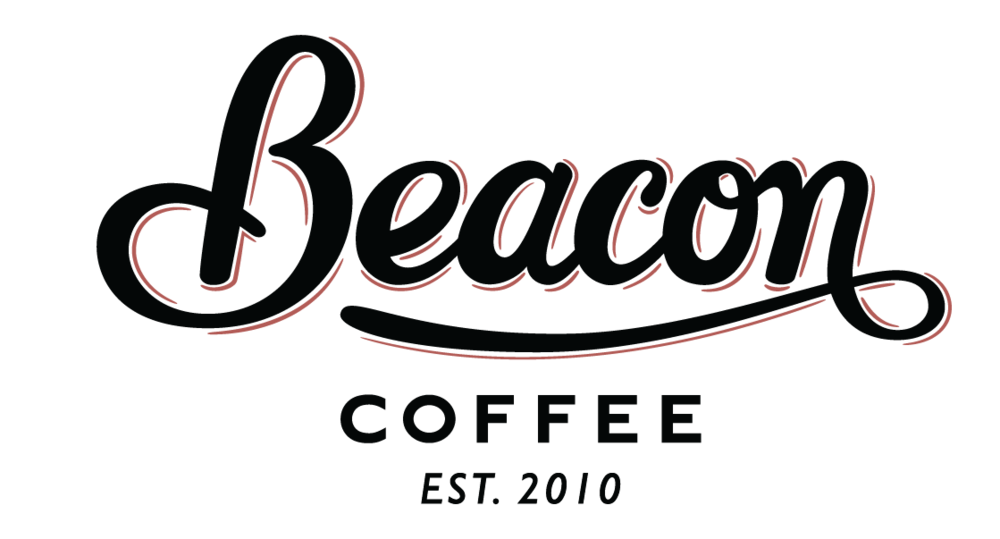

<link href="../bower_components/paper-button/paper-button.html" rel="import">
<link href="../bower_components/paper-input/paper-input.html" rel="import">
<link href="../bower_components/iron-form/iron-form.html" rel="import">
<link href="../bower_components/iron-ajax/iron-ajax.html" rel="import">

<dom-module id="jarkko-coffee-login">

	<template>
		<style>
		:host {
			display: block;		}
		paper-button{
			color:white;
			margin:1em 0 0 0;
			background-color:#402501;
		}
		img{
			display: block;
			width:50%;
			height:10%;
			margin:0 auto;
		}
		</style>
		
			
		<form is="iron-form" id="form">
			<paper-input label="Correo" type="email" required="true" value="{{email}}">
			</paper-input>
			<paper-input label="Clave" type="password" required="true" value="{{password}}">
			</paper-input>
			<paper-button raised id="btn">Ingresar
			</paper-button>
		</form>
		
		<iron-ajax 
			id="requestLogin"
			url="https://api.github.com/users/erickvelasco11/repos"
			params='{"type":"all"}'
			handle-as="json"
			on-response="loginResponse">
		</iron-ajax>
		
	</template>
	
	<script>
		Polymer({
			is: "jarkko-coffee-login",
			properties: {
				email: String,
				password: String
			},
			ready: function(){
				this.$.btn.addEventListener("click",()=> this.sendForm())
			},
			sendForm: function(){
				this.$.requestLogin.generateRequest();
			},
			loginResponse: function(data){
				console.log(data.detail.response);
			}

		})
	</script>
</dom-module>